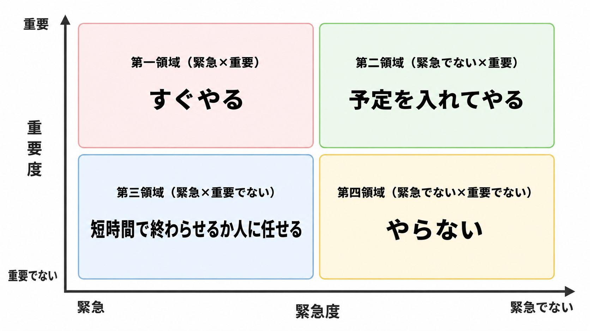

「緊急」と「重要」を混同すると、一生「こなすだけ」で終わる

どーもとーるです！
「毎日やることをこなしてるのに、気づいたら一日が終わっている」
SNSビジネスをやっていると、こういう感覚になる人、多いですよね。
DM返信、ストーリーズ更新、コメント返し、フィード投稿、ネタ出し、コンテンツ作成……
全部やらないといけないように見えます。
でも、全部は無理。
そして、何を削ればいいのかもわからない。
そういう人にこそ使ってほしいのが、アイゼンハワーマトリクスです。
前回お話しした「KSF（重要成功要因）」と、セットで効いてきます。
アイゼンハワーマトリクスとは
アメリカ第34代大統領ドワイト・アイゼンハワーが使っていたとされる、意思決定のフレームワークです。
タスクを「緊急度」と「重要度」の2軸で、4つに分類します。
- 第一領域（緊急×重要）：すぐやる
- 第二領域（緊急でない×重要）：予定を入れてやる
- 第三領域（緊急×重要でない）：短時間で終わらせるか人に任せる
- 第四領域（緊急でない×重要でない）：やらない
図にすると、こうです。

シンプルな枠組みです。
でも、大半の人が、正しく使えていません。
SNSビジネスで最も起こりやすい罠
それは、「緊急」と「重要」を混同することです。
コメントへの返信は「緊急」に見えます。
確かに、見た人がすぐ返信を期待しているかもしれない。
でも、それはあなたのビジネスにとって「重要」ですか？
DM返信も「緊急」に見えます。
でも、そのDMはKSF（前回のコラムで解説した重要成功要因）に関係ありますか？
「緊急なもの」は、常に目の前に現れます。
だから、自然と時間をとられます。
でも「重要なもの」は、緊急じゃないから後回しにされる。
結果——
毎日「緊急だが重要でないこと」で時間を使い、「重要だが緊急でないこと」に手がつかない。
一年後、「全然前に進んでいない」と感じる原因は、ここにあります。
「重要かつ緊急」は、そんなにたくさんない
第一領域（重要かつ緊急）は、実は頻繁に登場するものではありません。
1日に3つも4つも「重要かつ緊急なタスク」が積み上がるようなら、それはほぼ間違いなく「以前放置したことのツケ」です。
夏休みの宿題を思い出してください。
夏休み初日、宿題は「重要だが緊急でない」タスクです。
でも放置し続けると、最終日には「重要かつ緊急」にめでたくランクアップします。
クレーム対応も同じ。
ほとんどの場合は「早めに手を打てば防げた」案件が、先延ばしの結果として緊急化しています。
つまり、第一領域の多くは「第二領域の先送りが生み出した産物」なんです。
タスクを整理するとき、第一領域が出てくることはあります。
でも、それはとにかく早急に終わらせる。
そして残りの時間の大半を、第二領域（重要だが緊急でない）に使う。
これが、正しいアイゼンハワーマトリクスの使い方です。
第二領域が、ビジネスを育てる
アイゼンハワーマトリクスで一番大事なのは、第二領域です。
重要だが緊急でない——この象限にあるタスクが、ビジネスの資産になります。
SNSビジネスで言えば、こういうものです。
- コラムやコンテンツの作成（SEO資産を積む）
- ターゲット理解を深めるリサーチ
- メルマガやLINEのシナリオ設計
- 商品・サービスの改善
- KSFの仮説検証と振り返り
これらは、今すぐやらなくても怒られません。
だから、後回しになります。
でも、1年後に「積み上がっている人」と「疲弊している人」の差は、この第二領域に時間を使えたかどうかで決まります。
第三領域を「緊急かつ重要」と勘違いしない
最も騙されやすいのが、第三領域です。
緊急だが重要でないタスクは、緊急なので、重要に見えてしまう。
- 急に来たDMへの返信
- フォロワーからの質問への即レス
- 他の人の投稿へのコメント（いいね周り）
これらを「やらないと失礼」と感じる人は多いです。
でも、ここに時間を使いすぎると、第二領域が圧迫されます。
解決策は、「ルール化」です。
「DMの返信は1日2回、朝と夜だけ」
「コメント返しは10分以内で切る」
——こんなふうに時間を区切ることで、第三領域が際限なく広がるのを防げます。
ただし「重要」かどうかは、あなたの戦略次第
ここで一つ、大切な話をさせてください。
実は、DMを返すことやフォロワーとのコミュニケーションは、必ずしも「第三領域（重要でない）」に入るとは限りません。
僕のコンサルでは、フォロワーとの密なコミュニケーションを、とても大切にしています。
DM一通が信頼になり、その信頼が購買に繋がる。
これは僕自身も、クライアントも、実際に結果として出ていることです。
そして、フォロワーが少ない今のうちこそ、できることがあります。
フォロワーが100人なら、一人ひとりと向き合えます。
でも、10万人になったら？
物理的に難しくなります。
演歌歌手が一人ひとりのファンと握手して回るように、少人数だからこそできる丁寧さがある。
いずれやりたくてもできなくなることを、今のうちにやっておく。
これも長期的に見れば、ビジネスの大切な資産です。
ただし、誰とでも何でも話せばいいわけではありません。
適当なフォロワーさんと適当な話をすることが、優先度が高いとは言えない。
「誰と関係を深めるか」「どんな会話をするか」は、あなたのブランディングや戦略によります。
つまり、アイゼンハワーマトリクスで本当に大事なのは——
あなたにとっての「重要なタスク」を正しく定義することです。
フレームワークは、あくまで道具。
「DM返信は第三領域」「コンテンツ作成は第二領域」という答えは、あなたの戦略が決めるものです。
SNSビジネスでの実践的な使い方
毎朝、その日のタスクを、アイゼンハワーの4象限に分類してみましょう。
① 今日やろうとしていることを、全部書き出す
② 2つの質問で分類する
「これは重要か？（KSFに関係するか？）」
「これは今日中にやらないといけないか？」
③ 着手の順番を決める
第一領域から着手し、第二領域の時間を確保してから、第三領域に時間を割く。
大事なのは、第二領域を先に予定に入れることです。
後回しにすると、確実に第三領域に食われます。
まとめ
アイゼンハワーマトリクスは、タスクの「種類」を仕分けるツールです。
ポイントは2つ。
ひとつは、「緊急」と「重要」を混同しないこと。
もうひとつは、「第二領域（重要だが緊急でない）」に、意識的に時間を確保すること。
ただし、このフレームワークはKSFと組み合わせてはじめて機能します。
「何が重要か」の基準は、KSFが決まっていないと作れないからです。
次回は、KSFとアイゼンハワーを前提に、タスクの「処理時間」で優先順位をつける方法を解説します。
✦
P.S.
「第二領域を死守する1日の設計」は、メルマガ『3-2-1ラボ』で具体的な時間割つきで深掘りしています。週1回、読むだけで“やることの順番”が整う内容をお届け中です。
▶ メルマガ・無料講座の詳細・ご登録はこちら（3-2-1ラボ）
とーる｜行動経済アナリスト